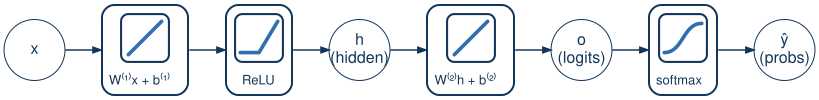

Advanced Machine Learning
This slide deck is still under active development. Expect changes before it is finalized.

Same fruit classifier, same example: x=[1.2,\ 0.2], true class banana.
| stage | value |
|---|---|
| h_{\text{pre}} = W^{(1)}x+b^{(1)} | [1.4,\ -0.8] |
| h = \text{ReLU}(h_{\text{pre}}) | [1.4,\ 0] |
| o = W^{(2)}h+b^{(2)} | [0.7,\ -0.42,\ 0.28] |
| \hat y = \text{softmax}(o) | [0.5042,\ 0.1645,\ 0.3313] |
| L = -\log \hat y_{\text{banana}} | 1.8048 |
The loss only touches W^{(1)} and b^{(1)} indirectly — how does a gradient reach them?
Nothing new here — you already did this
W^{(2)}, b^{(2)} are graded exactly like lecture 05’s classifier — because that’s exactly what they are.
The actual new material
The chain rule still works — you just follow one more link backward through the network.
Important
If a unit’s pre-activation was \le 0, ReLU zeroed it going forward — and now its derivative is 0 too, so no gradient passes through it at all, no matter how large the incoming error was
Every one of these gradients has the exact same shape — “the error flowing into this layer, times what fed into it”:
| layer | gradient | “what fed in” |
|---|---|---|
| output | \nabla W^{(2)} = (\hat y-y)\,h^\top | h |
| hidden | \nabla W^{(1)} = \dfrac{\partial L}{\partial h_{\text{pre}}}\,x^\top | x |
Note
Backprop isn’t a new kind of math for each layer — it’s the same local rule, applied once per layer, moving backward
x=[1.2,\ 0.2],\quad y=[0,1,0]\ \text{(banana)},\quad h_{\text{pre}}=[1.4,\ -0.8],\quad h=[1.4,\ 0] o=[0.7,\ -0.42,\ 0.28], \quad \hat y = [0.5042,\ 0.1645,\ 0.3313]
\frac{\partial L}{\partial o} = \hat y - y = [0.5042,\ 0.1645-1,\ 0.3313] = [0.5042,\ -0.8355,\ 0.3313]
Each row of \nabla W^{(2)} is that class’s Step 1 value, scaled by h=[1.4,\ 0] — same “one dot product per row” pattern as lab 04’s update step:
\nabla W^{(2)}_{\text{apple}} = 0.5042 \times [1.4,\ 0] = [0.7059,\ 0], \qquad \nabla W^{(2)}_{\text{banana}} = -0.8355 \times [1.4,\ 0] = [-1.1697,\ 0], \qquad \nabla W^{(2)}_{\text{orange}} = 0.3313 \times [1.4,\ 0] = [0.4638,\ 0]
\nabla b^{(2)} = [0.5042,\ -0.8355,\ 0.3313]
\frac{\partial L}{\partial h} = (W^{(2)})^\top(\hat y-y)
\frac{\partial L}{\partial h_1} = (0.5)(0.5042)+(-0.3)(-0.8355)+(0.2)(0.3313) = 0.5690 \frac{\partial L}{\partial h_2} = (1)(0.5042)+(2)(-0.8355)+(-1)(0.3313) = -1.4981
\frac{\partial L}{\partial h} = [0.5690,\ -1.4981]
\frac{\partial L}{\partial h_{\text{pre}}} = \frac{\partial L}{\partial h} \odot \sigma'(h_{\text{pre}}), \qquad \sigma'(h_{\text{pre}}) = [1,\ 0]\ \ (\text{since } h_{\text{pre}}=[1.4,\ -0.8])
\frac{\partial L}{\partial h_{\text{pre}}} = [0.5690 \times 1,\ \ -1.4981 \times 0] = [0.5690,\ 0]
Warning
Unit 2’s error signal got erased by ReLU’s derivative — that large -1.4981 from Step 3 never reaches W^{(1)}’s second row at all
\nabla W^{(1)} = \frac{\partial L}{\partial h_{\text{pre}}}\,x^\top
\nabla W^{(1)}_1 = 0.5690 \times [1.2,\ 0.2] = [0.6828,\ 0.1138], \qquad \nabla W^{(1)}_2 = 0 \times [1.2,\ 0.2] = [0,\ 0]
\nabla b^{(1)} = [0.5690,\ 0]
Same update rule as always, \theta \leftarrow \theta - \eta \nabla \theta, with \eta=0.5, applied to every parameter this network has:
Hidden layer
W^{(1)}_{\text{new}} = \begin{array}{l}[0.6586,\ 0.9431]\\ [-1,\ 2]\end{array}
b^{(1)}_{\text{new}} = [-0.2845,\ 0]
Output layer
W^{(2)}_{\text{new}} = \begin{array}{l}[0.1471,\ 1]\\ [0.2848,\ 2]\\ [-0.0319,\ -1]\end{array}
b^{(2)}_{\text{new}} = [-0.2521,\ 0.4177,\ -0.1656]
Note
W^{(1)}’s second row is unchanged — [-1,\ 2] before and after. A zero gradient means zero update, no matter what \eta is
Run the same forward pass again, with the updated parameters:
o_{\text{new}} = [-0.15,\ 0.6155,\ -0.1878], \qquad \hat y_{\text{new}} = [0.2431,\ 0.5228,\ 0.2341]
L_{\text{new}} = -\log(0.5228) \approx 0.6486
Backpropagation is the chain rule, applied once per layer, moving backward from the loss.
| Forward | x \to W^{(1)}x+b^{(1)} \to \text{ReLU} \to h \to W^{(2)}h+b^{(2)} \to \text{softmax} \to \hat y \to L |
| Backward | \dfrac{\partial L}{\partial o} \to \dfrac{\partial L}{\partial h} \to \dfrac{\partial L}{\partial h_{\text{pre}}} \to \nabla W^{(1)}, \nabla b^{(1)} |
| Update | \theta \leftarrow \theta - \eta\nabla\theta, for every parameter tensor, same rule as always |
Note
This recipe — forward, then chain-rule backward one layer at a time, then update — is the template for training any feedforward network, not just this two-layer one
Tip
In lab: walk this exact example’s full forward and backward pass by hand, including the dead-unit gradient
CST463 · Advanced Machine Learning